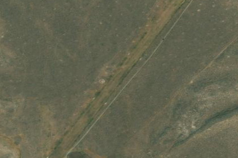

BIG SOUTHERN BUTTE
U46 · ID

Aerial imagery source: Esri, Vantor, Earthstar Geographics, and the GIS User Community
| Identifier | U46 |
|---|---|
| State | ID |
| Runway length | 2,600 ft |
| Runway width | 110 ft |
| Surface | DIRT |
| Runway | 01/19 |
| Elevation | 5,073 ft |
| Ownership | public |
| CTAF | 122.9 |
| Coordinates | 43.43258333, -113.05544444 |
Notes
[idaho_itd] State Airfield [shortfield] Location Overview The airstrip sits on the Eastern Snake River Plain in Butte County, Idaho, about 10 miles west of the small community of Atomic City and roughly in the shadow of Big Southern Butte itself — a massive rhyolite lava dome that rises about 2,500 feet above the surrounding plain. The field sits at an estimated elevation of 5,073 feet MSL on a small patch of land. The single runway, 01/19, is a 2,600-by-110-foot dirt strip. It's unattended, uncontrolled, and has no services of any kind — this is remote high desert, not a fly-in community. Camping & Recreation There are no formal amenities at the strip itself — no fuel, no facilities, and no on-field camping infrastructure. The main draw is the butte looming beside it: hikers who make the trek to the 7,550-foot summit are rewarded with sweeping panoramic views, with the usable season running roughly mid-May through October depending on snow and road conditions. The summit access road is drivable by full-sized vehicle but is best suited to an ATV or UTV. Beyond that, expect wide-open, high-desert terrain typical of the Snake River Plain — solitude and scenery rather than services. Notes & Warnings This strip demands respect. There's no winter maintenance, and livestock roam on and around the field. Runway 01/19's surface condition is often poor due to damage from livestock, ground vehicles, rodents, and vegetation, and the runway is bordered the entire length by a berm roughly a foot and a half high with an adjacent ditch about a foot deep. A 2025 FAA safety inspection likewise found the dirt runway in only fair condition, noting the surface was rough due to unevenness from thick, waist-high grasses, alfalfa, and sagebrush-like vegetation covering the runway. The airport sits in a genuinely desolate area with no services available, and the runway edges and thresholds are marked only with white rock boundary markers. Pilots should treat this as a serious backcountry/rough-field operation: check current NOTAMs and surface conditions before going, expect a bumpy, vegetation-choked strip, watch for livestock and wildlife on the runway, and be prepared for high-density-altitude performance considerations given the elevation. History Big Southern Butte has long served as a landmark for travelers crossing the Snake River Plain, visible for great distances across the flat volcanic terrain and used by early explorers, pioneers, and Native peoples as a navigational reference point. Geologically, it's the largest and youngest of three rhyolite lava domes that formed near the center of the plain roughly a million years ago, with the dome itself dating to about 300,000 years old — making it one of the largest volcanic domes on Earth. It was designated a U.S. National Natural Landmark in 1976. The airstrip below it grew out of that same backcountry tradition — an informal dirt field established to give pilots access to the butte and the surrounding high desert, later formalized under FAA record-keeping (identifier U46) and periodically inspected as part of Idaho's aeronautics program, but it has never developed beyond a bare-bones, unattended backcountry strip. The nearby town of Atomic City and the wider area's ties to the Idaho National Laboratory give the region an additional layer of 20th-century nuclear-era history, though the airstrip itself remains simply a rustic gateway to the butte.